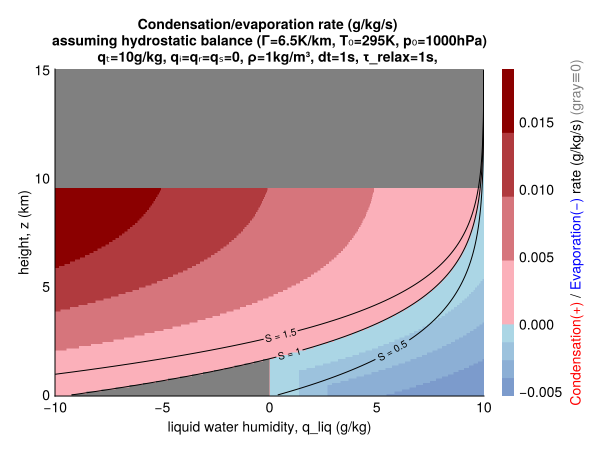
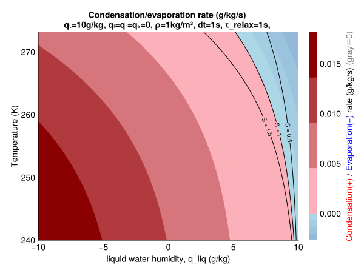
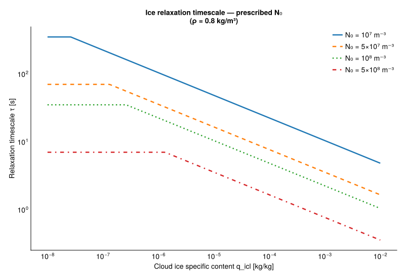
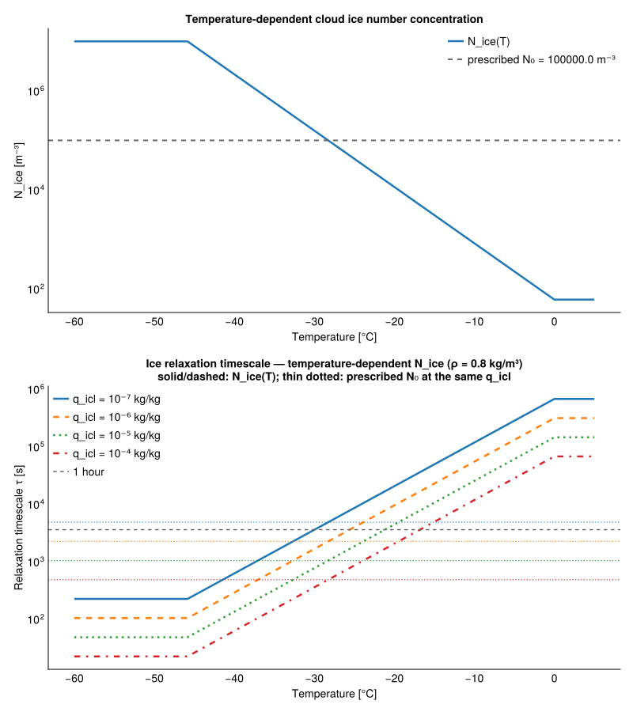
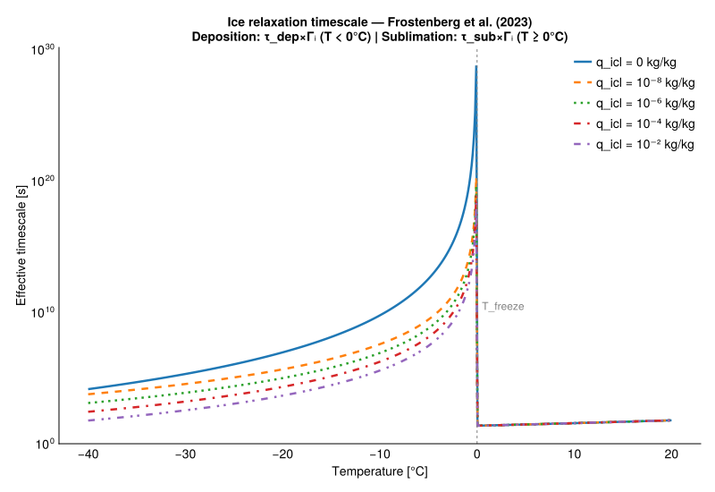

Microphysics NonEquilibrium
The MicrophysicsNonEq.jl module describes a bulk parameterization of diffusion of water vapor and subsequent condensation/evaporation to cloud droplets and deposition/sublimation to cloud ice crystals. The rates are based on the difference between the specific humidity and the specific humidity at saturation over liquid and ice at the current temperature, and is modeled as a relaxation towards equilibrium. This formulation is derived from [36] and [25]. The cloud microphysics variables are expressed as specific contents:
q_tot- total water specific content,q_vap- water vapor specific content (i.e., specific humidity),q_lcl- cloud water specific content,q_icl- cloud ice specific content,
The timescale is assumed to be constant for cloud liquid. For cloud ice, there are a couple of options:
- constant timescale,
- timescale computed based on constant ice crystal number concentration
- timescale computed based on temperature dependent ice crystal number concentration
- deposition timescale dependent on [37] INP parameterization. The sublimation timescale with the Frostenberg option remains constant.
The [36] and [25] papers use mass mixing ratios, not specific contents. Additionally, in their formulations they consider two different categories for liquid: cloud water and rain. For now we only consider cloud water and use a single relaxation timescale $\tau_l$ (liquid) rather than separate $\tau_c$ (cloud) and $\tau_r$ (rain) values.
\[\begin{equation} \left. \frac{d \, q_{lcl}}{dt} \right|_{cond, evap} = \frac{q_{vap} - q_{sl}}{\tau_l \Gamma_l}; \;\;\;\;\;\;\; \left. \frac{d \, q_{icl}}{dt} \right|_{dep, sub} = \frac{q_{vap} - q_{si}}{\tau_i \Gamma_i} \end{equation}\]
where:
- $q_{vap}$ is the specific humidity
- $q_{sl}$, $q_{si}$ is the specific humidity at saturation over liquid and ice
- $\tau_l$, $\tau_i$ is the liquid and ice relaxation timescale
- $\Gamma_l$, $\Gamma_i$ is a psychometric correction due to latent heating/cooling:
\[\begin{equation} \Gamma_l = 1 + \frac{L_{v}}{c_p} \frac{dq_{sl}}{dT}; \;\;\;\;\;\;\;\; \Gamma_i = 1 + \frac{L_{s}}{c_p} \frac{dq_{si}}{dT} \end{equation}\]
\[\begin{equation} \frac{dq_{sl}}{dT} = q_{sl} \left(\frac{L_v}{R_v T^2} - \frac{1}{T} \right); \;\;\;\;\;\;\;\;\;\; \frac{dq_{si}}{dT} = q_{si} \left(\frac{L_s}{R_v T^2} - \frac{1}{T} \right) \end{equation}\]
where:
- $T$ is the temperature,
- $c_p$ is the specific heat of air at constant pressure,
- $R_v$ is the gas constant of water vapor,
- $L_v$ and $L_s$ is the latent heat of vaporization and sublimation.
When the air is subsaturated, the evaporation and sublimation rates are additionally bounded by the available condensate, at most $q_k/\tau_k$:
\[\begin{equation} \left. \frac{d \, q_{k}}{dt} \right|_{evap, sub} = - \frac{\min(q_{sk} - q_{vap}, \; \Gamma_k \max(0, q_{k}))}{\tau_k \Gamma_k}, \;\;\;\;\;\;\; k \in \{lcl, icl\}, \end{equation}\]
so that the relaxation target $q_k + S_k \tau_k = q_k - \min\bigl((q_{sk} - q_{vap})/\Gamma_k,\; q_k\bigr)$ removes at most the condensate present and at most what closes the vapor deficit once the evaporative cooling is accounted for. Two temperature-based limiters are applied to the tendencies:
INP limiter (ice): Ice deposition (positive tendency) is suppressed at temperatures above freezing ($T > T_{freeze}$), where no ice nucleating particles (INPs) are available. Ice sublimation (negative tendency) is unaffected.
Homogeneous limiter (liquid): Liquid condensation (positive tendency) is suppressed at temperatures below the homogeneous nucleation threshold ($T < T_{hom} \approx 233\,\text{K}$), where all liquid water would freeze instantaneously. Liquid evaporation (negative tendency) is unaffected, allowing any remaining cloud water to dissipate.
Both limiters apply to all relaxation timescale options.
The above forms of condensation/sublimation and deposition/sublimation are equivalent to those described in the adiabatic parcel model with some rearrangements and assumptions. To see this, it is necessary to use the definitions of $\tau$, $q_{sl}$, and the thermal diffusivity $D_v$:
\[\begin{equation} \tau = 4 \pi N_{tot} \bar{r}, \;\;\;\;\;\;\;\; q_{sl} = \frac{e_{sl}}{\rho R_v T}, \;\;\;\;\;\;\;\; D_v = \frac{K}{\rho c_p}. \end{equation}\]
If we then assume that the supersaturation $S$ can be approximated by the specific contents (this is only exactly true for mass mixing ratios):
\[\begin{equation} S_l = \frac{q_{vap}}{q_{sl}}, \end{equation}\]
we can write
\[\begin{equation} q_{vap} - q_{sl} = q_{sl}(S_l - 1). \end{equation}\]
$\Gamma_l$ and $\Gamma_i$ then are equivalent to the $G$ function used in our parcel model and parameterizations.
include("plots/NonEqCondEvapRate.jl")CairoMakie.Screen{SVG}


Ice relaxation timescale — prescribed ice number
PrescribedIceNumber option derives the relaxation timescale $\tau_i$ based on the prescribed cloud-ice number concentration $N_0$.
\[\begin{equation} \tau_{i} = \frac{1}{4 \pi \, D_v \, N_0 \, r} \end{equation}\]
where $D_v$ is the water vapor diffusivity ($\text{m}^2/\text{s}$) and $r$ is the ice crystal radius.
Assuming a mono-disperse distribution and spherical ice crystals we estimate the radius as
\[\begin{equation} r = max \left(\left(\frac{3 \, q_{icl} \, \rho }{4 \pi \, N_0 \, \rho_i}\right)^{1/3} \, , \, r_0 \right) \end{equation} \]
where $\rho$ is the air density, $q_{icl}$ is cloud ice specific humidity, and $\rho_i$ is the ice density. A minimum radius $r_0 = 1\,\mu m$ is enforced.
Figure below show the relaxation timescale for different assumed number concentrations and cloud ice specific humidities. The constant timescale at low cloud ice values is the result of the minimum assumed particle radius.
include("plots/plotting_tau_relax_prescribed_N0.jl")Plot saved to tau_relax_prescribed_N0.svg
Ice relaxation timescale — temperature-dependent ice number
The TemperatureDependentIceNumber option uses the same relaxation timescale formulae as the prescribed ice number, but replaces the constant assumed ice crystal number concentration$N_0$ by a prescribed function of temperature based on [38]
\[\begin{equation} N_{ice}(T) = \min\!\left(N_{ref} \, \exp\!\left(a + b \, \max(T_{freeze} - T, 0)\right), \, N_{max}\right) \end{equation}\]
with default parameters $N_{ref} = 10^3\,\text{m}^{-3}$, $a = -2.80$, $b = 0.262\,\text{K}^{-1}$, and $N_{max} = 10^7\,\text{m}^{-3}$.
The resulting timescale is hours in the mixed-phase range, so supercooled liquid is not glaciated within a few time steps through the Wegener–Bergeron–Findeisen process, while at cirrus temperatures the relaxation stays fast. The timescale is very slow at sub-zero temperatures and the deposition onto ice-free supersaturated air is very slow there (with $q_{icl} \to 0$ the $1\,\mu m$ radius floor gives $\tau_i$ of days).
include("plots/plotting_tau_relax_temperature_dependent_N.jl")Plot saved to tau_relax_temperature_dependent_N.svg
Ice relaxation timescale — Frostenberg et al. (2023)
The ice relaxation timescale $\tau_i$ can also be based on a temperature-dependent parameterization of ice nucleating particle (INP) concentrations from Frostenberg et al. [37]. This could be a good approximation at cold temperatures, but should not be used as a sole timescale due to the importance of ice-multiplication processes in warmer temperatures. The INP number concentration is estimated as a function of temperature:
\[\begin{equation} N_{icl} = \exp\!\left(\overline{\ln(\mathrm{INPC})}(T)\right) \end{equation}\]
where $\overline{\ln(\mathrm{INPC})}(T)$ is the mean log-INP concentration from the Frostenberg et al. (2023) parameterization. The timescale is computed in the same way as for constant and temperature dependent ice crystal number concentration options. Similarly, a minimum radius $r_0 = 1\,\mu m$ is enforced to avoid singularities when $q_{icl} = 0$ or $N_{icl} = 0$. This option however uses different timescales for deposition and sublimation:
\[\begin{equation} \left. \frac{d \, q_{icl}}{dt} \right|_{dep, sub} = \begin{cases} \dfrac{q_{vap} - q_{si}}{\tau_{dep} \, \Gamma_i} & \text{if } q_{vap} > q_{si} \text{ (deposition)} \\[10pt] \dfrac{-\min(-\Delta q,\; \Gamma_i \, q_{icl})}{\tau_{sub} \, \Gamma_i} & \text{if } q_{vap} \le q_{si} \text{ (sublimation)} \end{cases} \end{equation}\]
where:
- $\tau_{dep}$ is the Frostenberg INP-based timescale (temperature-dependent),
- $\Gamma_i$ is the psychometric correction factor (applied to both deposition and sublimation),
- $\tau_{sub}$ is a constant sublimation timescale (default: $\tau_i = 10\,s$),
- $\Delta q = q_{vap} - q_{si}$ is the saturation excess.
include("plots/plotting_tau_relax_frostenberg.jl")Plot saved to tau_relax_frostenberg.svg
Cloud condensate sedimentation
We use the analytical Stokes-regime terminal velocity for cloud liquid droplets and the Chen et al. [12] parameterization (with the coefficients for small ice particles) for cloud ice sedimentation velocities. In the 1-moment precipitation scheme, we assume that cloud condensate is a continuous field and doesn't introduce an explicit particle size distribution. For simplicity, we assume a monodisperse size distribution and compute the group terminal velocity based on the volume diameter and prescribed number concentration:
\[\begin{equation} D_{vol} = \left( \frac{6 \, \rho_{air} \, q}{\pi \, N \, \rho} \right)^{1/3} \end{equation}\]
where:
- $\rho_{air}$ is the air density,
- $q$ is the cloud liquid or cloud ice specific content,
- $N$ is the prescribed number concentration ($500/cm^3$ by default),
- $\rho$ is the cloud water or cloud ice density.
The sedimentation velocity then is
\[\begin{equation} v_t = v_{term}(D_{vol}). \end{equation}\]
The Chen et al. [12] coefficients used for cloud ice were fitted for small ice particles (below 625 μm). The Stokes-regime formula used for cloud liquid is valid for small droplets, where the drag is dominated by viscous forces.